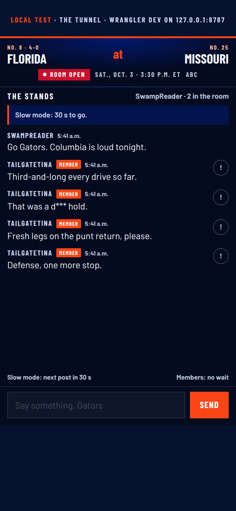
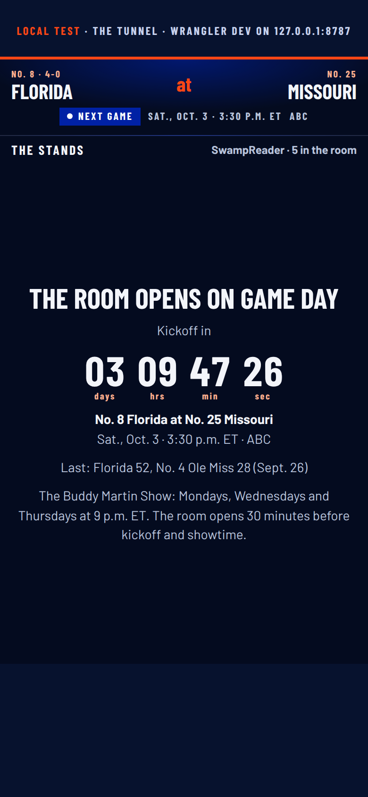
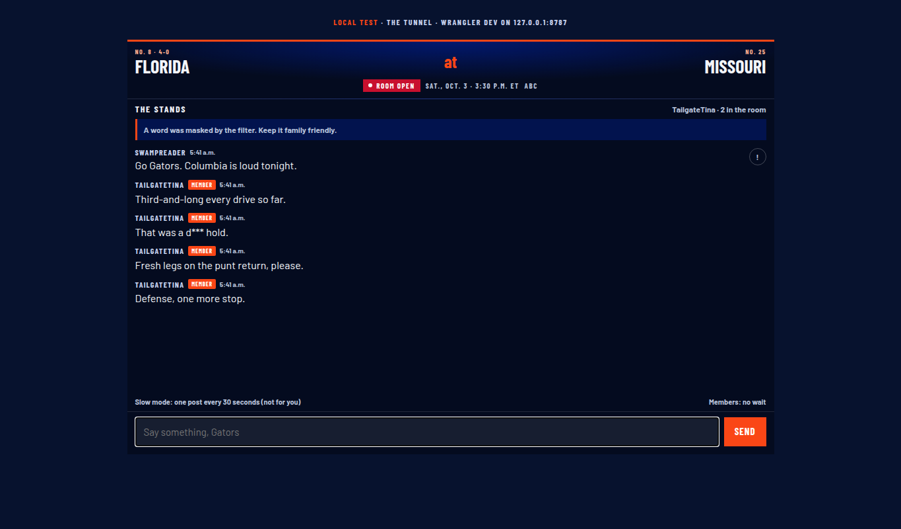
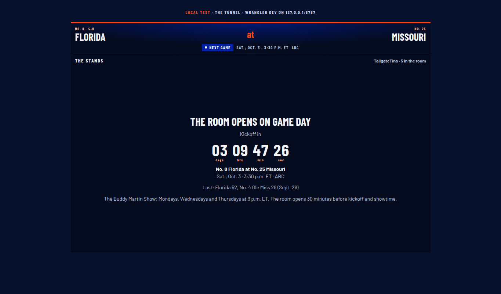

The live chat room for game days and show nights. Everything below is real: a Cloudflare Worker and Durable Object (worker.mjs) running under wrangler dev on this machine, the embed (client.js) in two Chromium contexts at 390 and 1365, driven by test.mjs. The score strip reads sports-live/scoreboard.json (ESPN-sourced). Handles are the test accounts the run created. Nothing was deployed.
21checks passed, 0 failed (TEST.md)
0browser console errors
200messages kept after 210 posts
5 minmembers-only lock at kickoff, from scoreboard.json
0Workers in the account today (workers_list)
Screenshots from the run

390, room openReal next game on the strip. SwampReader (reader) has just been told "Slow mode: 30 s to go." TailgateTina (member) posted "That was a d*** hold." after the server masked the word.

390, room closedThe desk override off and the real scoreboard in: countdown to Sat., Oct. 3, 3:30 p.m. ET at No. 25 Missouri, last result Florida 52, No. 4 Ole Miss 28. No empty feed, no input.

1365, room open, member's browserSame room from TailgateTina's side: "A word was masked by the filter. Keep it family friendly." Members see "Slow mode: one post every 30 seconds (not for you)."

1365, room closedFive connections were still in the room (two browsers, three raw WebSocket test clients) when the desk closed it.
What the test proved, in order
Lock window from the real scoreboard: 2026-10-03T19:30Z to 19:35Z.
Reader blocked one minute after a simulated kickoff: "Members only for the first 5 minutes after kickoff."
Lock lifts ten minutes after kickoff.
Desk holds the room open with the real scoreboard on the strip.
Two browsers joined; presence count 2.
Reader post fans out to the other browser.
Member post arrives with the Member badge.
Second reader post inside 30 s refused; input locked.
"damn" masked to "d***" on the server; member not slowed.
Poster told a word was masked.
One-tap report acknowledged.
Three reports from three accounts hide the post everywhere.
Moderator queue lists it: 3 reports, 1 hidden.
Member-only mode blocks readers.
Ring buffer holds 200 after 210 more posts.
Bad token refused at the socket, HTTP 401.
Reader's link refused.
Real scoreboard, no override: closed until game day.
Quiet state: score, countdown, no input.
No browser console errors.
Rerun: NODE_PATH=<scratchpad>/node_modules node deploy/dept-ideas/chat/test.mjs. Fonts on this page: Barlow and Barlow Condensed. Sources: sports-live/scoreboard.json (ESPN via README.md), TEST.md, mcp__Cloudflare_Developer_Platform__workers_list → {"workers":[],"count":0}.